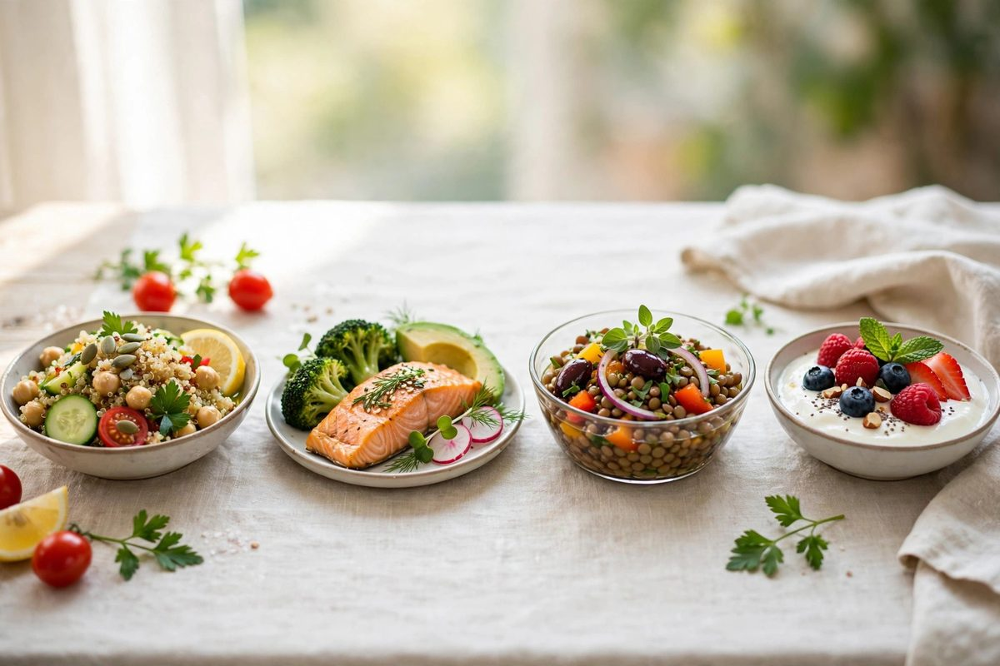

Meal Timing for Weight Loss — Does When You Eat Matter?
What the evidence says about meal timing, breakfast, late eating, and intermittent fasting for weight loss.
Does timing matter?
For weight loss, how much you eat matters far more than when you eat it. A calorie deficit causes weight loss whether the calories are eaten at 8 a.m. or 8 p.m. But timing does affect hunger, energy, sleep, and how easy the deficit is to keep, so it is worth thinking about. Some timing patterns help people eat less without feeling deprived, while others make the deficit harder. The right pattern is the one that fits your life and helps you keep the deficit, not the one that sounds most impressive.
Breakfast: helpful, not compulsory
Breakfast is often called the most important meal, but the evidence is mixed. Some people find breakfast reduces hunger and prevents overeating later, while others feel fine skipping it and eat less overall. There is no rule that you must eat breakfast to lose weight. What matters is your total daily intake and whether you feel in control. If breakfast helps you, eat a protein-rich one. If skipping it helps you stay in a deficit without bingeing later, skipping it is fine. Judge by your own results over two or three weeks, not by a slogan.
Late-night eating
Eating late at night is linked with weight gain, but the reason is probably not the clock. Late eating usually means extra calories: snacks in front of the television, after dinner, when you are tired and willpower is low. Eating a large meal close to bedtime can also disturb sleep, which worsens hunger the next day. If you eat late because you are genuinely hungry, a small protein snack is better than a large sugary one. A practical rule is to finish eating two to three hours before bed, which helps both sleep and calorie control.
Intermittent fasting
Intermittent fasting means eating within a limited window, such as 16 hours fasting and 8 hours eating, or eating normally five days a week and very little on two days. Fasting can help some people because it removes a whole period of eating, which makes a deficit easier. Studies show it works about as well as ordinary calorie restriction for weight loss, no better and no worse. It is not suitable for everyone: people with diabetes, pregnant women, people with a history of eating disorders, and anyone taking certain medicines should not fast without medical advice. If you try it, keep the eating window nutritious and do not use fasting as an excuse to overeat.
Meal frequency and snacks
Eating three meals a day with one or two planned snacks suits most people. Very frequent eating can make it hard to notice hunger and fullness, while very infrequent eating can cause extreme hunger and overeating. Regular meal times help the body clock and make hunger predictable. Plan your meals, eat slowly, and avoid grazing between meals, because unplanned bites add up. If you are hungry between meals, a planned protein snack is better than an unplanned raid on the biscuit tin.
Finding your pattern
Experiment for two weeks at a time. Try regular meal times, try a protein-rich breakfast, try finishing eating earlier in the evening, and see what happens to your hunger, energy, sleep, and weight. Keep a short note of what you tried and how it felt. The best timing pattern is the one you can keep for months without thinking about it. Total calories decide whether you lose weight; timing decides whether the process feels easy or hard.
Frequently Asked Questions
Is it bad to eat after 8 p.m.?
Not by itself. What matters is total daily calories. Late eating often adds extra snack calories and disturbs sleep, so finishing eating two to three hours before bed is a useful habit.
Does intermittent fasting work for weight loss?
Yes, for some people. It works by making a calorie deficit easier, not by any special fat-burning effect. Studies show it works about as well as ordinary calorie restriction.
Should I eat breakfast to lose weight?
Not necessarily. Breakfast helps some people control hunger, while others do fine without it. Choose based on your own hunger and results, not on a rule.